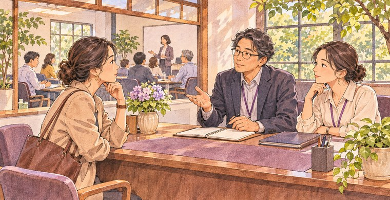

PPL-28 · 香港 · 15–20分鐘 · 情緒勞動 · 情緒表達規則 · 專業服務
熱情的問候，要付出多少情緒代價？

服務標準也界定員工需要付出的情緒勞動
情緒勞動研究探討工作所要求的情緒表達，與員工的感受及所需付出的努力有何關係。研究把改變外在表現與改變內在感受區分開來；單憑笑容，無法可靠地判斷員工是否做了其中任何一種。以下的訪客服務櫃位及回饋均屬虛構。
課堂決定
香港一個文化場地正為訪客服務櫃位選定一套試行四星期的服務標準。A 要求每次日常接待都要展露燦爛笑容，以輕快語調說出同一句熱情的開場白。B 要求員工迅速招呼訪客、語氣尊重、用心聆聽，並清楚提供資料，但容許神情平靜，用語自然多樣。兩者都保留禮貌、無障礙服務、準確指路及按程序上報投訴的要求。A 也容許員工平靜地應對情緒困擾和處理投訴；劃一的熱情要求只適用於日常接待，不適用於緊急情況。
兩個方案都可在已有撥款的培訓及正常人手安排下推行。不論採用哪個方案，員工仍可享有有薪休息、主管支援，並在應對棘手情況後獲安排替更。員工無須忍受辱罵、透露私人感受或接受減薪。經理想要的是親切可靠的服務，而不是考驗員工的個性。擬議標準只用於指導試行期間的工作輔導，不用於自動分析面部表情、秘密監察或紀律評分。
A 或可讓服務要求容易教授和辨識。B 或可讓員工因應不同情況作出專業得體的表達，不必人人表現出同一種情緒，但管理人員仍須說明哪些具體行為才算尊重訪客。目前尚無實測資料可供比較兩個方案的顧客服務成效或員工所需付出的努力。
A 把日常接待時外顯的熱情表現劃一。B 把尊重訪客的服務行為劃一，但容許不同的表達方式。兩者在提供資料、無障礙服務、處理投訴和支援方面的責任完全相同。神情平靜本身不代表冷漠；笑容燦爛本身也不代表真心熱情。
你的決定你會試行哪一套標準：劃一要求熱情，還是要求尊重訪客但容許不同的表達方式？請說明哪些行為必須一致，以及單憑同事接待訪客時的外在表現，不能判斷他們有何感受。
第二輪 · 多了一項資料
在任何方案試行之前，六名服務員自願參加保密的小組討論，分享例子。一名服務員說，輕快熱情的問候通常與自己的感受一致。另一名說，處理一般查詢時，這樣打招呼並不費力；但接連遇上幾次緊張場面後，即使下一位訪客很有禮貌，也要花力氣才能做到。第三名說，即使神情平靜，自己也能親切地聆聽、清楚地解說，但燦爛的笑容卻像是演出來的。這些只是用來說明情況的自述，不是診斷或員工排名，也不表示任何人的服務欠佳。
另一項便利抽樣訪問了十二名正要離開的訪客，其中九名表示，清楚的指引和用心聆聽是他們最重視的事項；另有三名也提到喜歡受到熱情接待。沒有人要求服務員的表情一致。問題讓訪客描述自己的偏好，而不是在經過測試的服務方案之間作選擇。樣本小，並非隨機抽取，也可能未涵蓋不滿意的訪客。這些回應不能證明表達方式從來不重要，也不能證明 B 能提高滿意度。
經理確認，B 可保留同樣的必要服務步驟和無障礙溝通安排；兩個方案都不會改變處理排隊人流的能力、休息、上報或支援安排。未有動用新增的培訓預算。要決定的仍是對外顯情緒應規定得多細，並須計劃如何檢視服務禮貌和員工所需付出的努力，而不是假定同一種表達方式對人人都一樣費力。
你的決定看過這些回饋後，你會維持還是改變選擇？請區分表層演繹與出於真實感受的專業表達，再提出一項服務檢查和一項員工支援措施，但不要對員工作出診斷或排名。
回答第一個問題
B 是合理的暫定選擇：為招呼訪客、用心聆聽、清楚解說、用語尊重及適當上報訂定一致的標準，而不是把歡迎訪客等同於掛上指定的笑容。A 的情緒表達規則具體，在培訓上確有優勢，但這不足以證明有必要採用指定的情緒表現。經理觀察接待情況，只能看見員工的行為，不能知道員工是否真有那份感受，或要花多大力氣才能做到。
回答第二個問題
這些回饋令有限度試行 B 更有理據，但不代表 B 已證實較優。表層演繹是改變外在表現，內在感受卻沒有相應改變，例如心裏並不熱情，卻表現得熱情。若流露的關懷或親切與員工的真實感受一致，就是出於真實感受的專業表達，不必表現得格外熱烈。深層演繹則是嘗試調整內在感受，使之符合表達要求。如果規則本身不合適，經理不應要求員工設法令自己感到愉快，藉此解決問題。
不同接待情況可帶來不同要求
同一名員工應對不同情況時，所需付出的努力可以不同；兩名員工用同樣方式打招呼，也可以付出不同程度的努力。不要指自然流露熱情的同事不真誠，也不要認定神情平靜的同事不投入。B 不會消除情緒勞動：遇上棘手情況後，要繼續以尊重的態度待客，仍可能需要調節情緒。真誠也不等於可以流露敵意或不顧禮貌。目標是訂立相稱的行為標準，而不是任由員工表達情緒，也不是強求人人愉快。
檢查服務，提供工作支援
事先通知員工，並以相稱的方式觀察：訪客有否獲得招呼、其需要有否獲聆聽、所得資料是否正確且容易取用，以及有需要時有否提供上報途徑。可邀請訪客自願就解說是否清楚、是否受到尊重提供回饋，而不是問每位員工看來是否愉快。讓員工自願私下反映哪些接待要求較難應付，訂明向主管交接的做法，並確保員工能實際使用已有撥款的替更和休息安排。討論工作設計和資源時，不要求員工解釋私人感受，也不蒐集靠推斷得出的個人情緒資料。
從試行中學習，不誇大證據
檢討四星期的試行時，應參考服務遺漏、投訴處理、無障礙服務需要、排隊情況的觀察，以及員工自願提供的回饋。若何謂有禮變得不清晰，或欠缺有用的接待指引，應保留修訂 B 的途徑。十二名訪客中的九名佔這個便利樣本的75%，並非所有訪客的75%。六名服務員的例子顯示，所需付出的努力可能有別，並非在估算這種情況有多普遍，也不能證明指定用語會令人精疲力竭。三名訪客喜歡熱情接待，這是容許員工自然流露熱情的理由，而不是要求人人都要表現熱情的理由。
教師說明
本個案改變的是情緒表達規則，而不是訪客應享有的服務，亦不是讓員工選擇是否採取額外待客舉措的安排。這也有別於透過榜樣教授一套已議定的常規。請學生指出一項行為要求和一項支援措施，但不要從表情推斷員工的精神健康狀況或投入程度。相關研究包括實驗、實地觀察、一項統合分析和一篇敍述性綜述，所用證據有所重疊。不要據此作出診斷，或為虛構的服務櫃位量化效益；HSE 指引提供的是英國工作設計的背景，而非香港法律意見。
第二輪
在任何方案試行之前，六名服務員自願參加保密的小組討論，分享例子。一名服務員說，輕快熱情的問候通常與自己的感受一致。另一名說，處理一般查詢時，這樣打招呼並不費力；但接連遇上幾次緊張場面後，即使下一位訪客很有禮貌，也要花力氣才能做到。第三名說，即使神情平靜，自己也能親切地聆聽、清楚地解說，但燦爛的笑容卻像是演出來的。這些只是用來說明情況的自述，不是診斷或員工排名，也不表示任何人的服務欠佳。
另一項便利抽樣訪問了十二名正要離開的訪客，其中九名表示，清楚的指引和用心聆聽是他們最重視的事項；另有三名也提到喜歡受到熱情接待。沒有人要求服務員的表情一致。問題讓訪客描述自己的偏好，而不是在經過測試的服務方案之間作選擇。樣本小，並非隨機抽取，也可能未涵蓋不滿意的訪客。這些回應不能證明表達方式從來不重要，也不能證明 B 能提高滿意度。
經理確認，B 可保留同樣的必要服務步驟和無障礙溝通安排；兩個方案都不會改變處理排隊人流的能力、休息、上報或支援安排。未有動用新增的培訓預算。要決定的仍是對外顯情緒應規定得多細，並須計劃如何檢視服務禮貌和員工所需付出的努力，而不是假定同一種表達方式對人人都一樣費力。
你的決定看過這些回饋後，你會維持還是改變選擇？請區分表層演繹與出於真實感受的專業表達，再提出一項服務檢查和一項員工支援措施，但不要對員工作出診斷或排名。